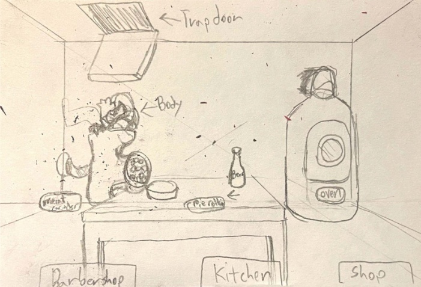
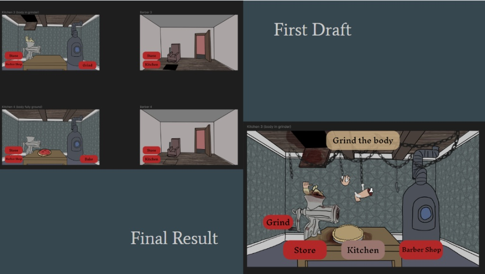
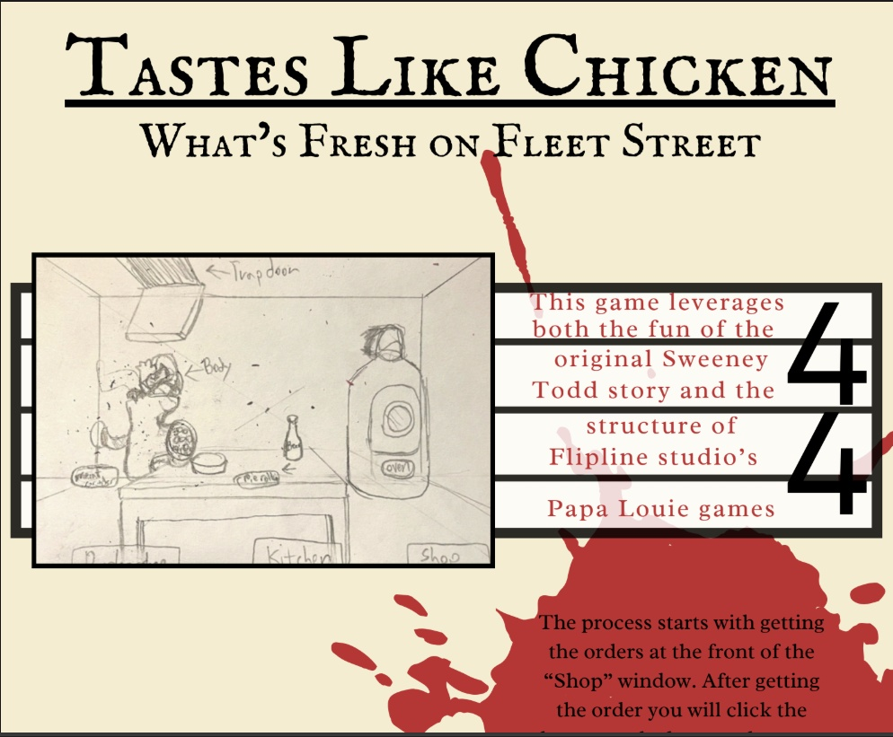
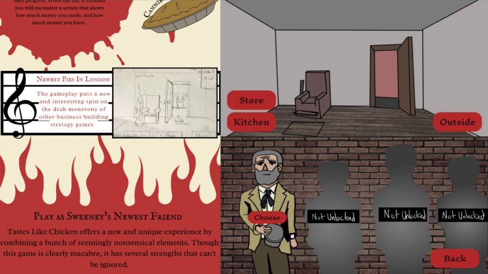

What's Fresh On Fleet Street.
Step into a dark, competitive 2D platformer brawler where characters attempt to become the 'freshest on Fleet Street'. The streets are chaotic, the competition is cutthroat, and the meat pies... well, let's just say they're made from the freshest Flesh available.
Fight, cook, and sell. Master the three steps of the dark market pie trade to win.
Engage in fast-paced platforming combat. Use slides, dodges, and punches to extract Flesh from enemies and rivals, or seek out secret Spices scattered across the platforms.
Combine your ingredients into a valid recipe. The quality of your components determines the potential of your final creation.
Race across the map and slam the service bell to sell your pie. Throw your finished creation at the NPC tasters to gain Reputation. The vendor with the freshest reputation wins.
Gritty, industrial, and slightly macabre. These editor screenshots show the initial visual direction, blending 2D brawling mechanics with an atmospheric Victorian-esque London backdrop.



